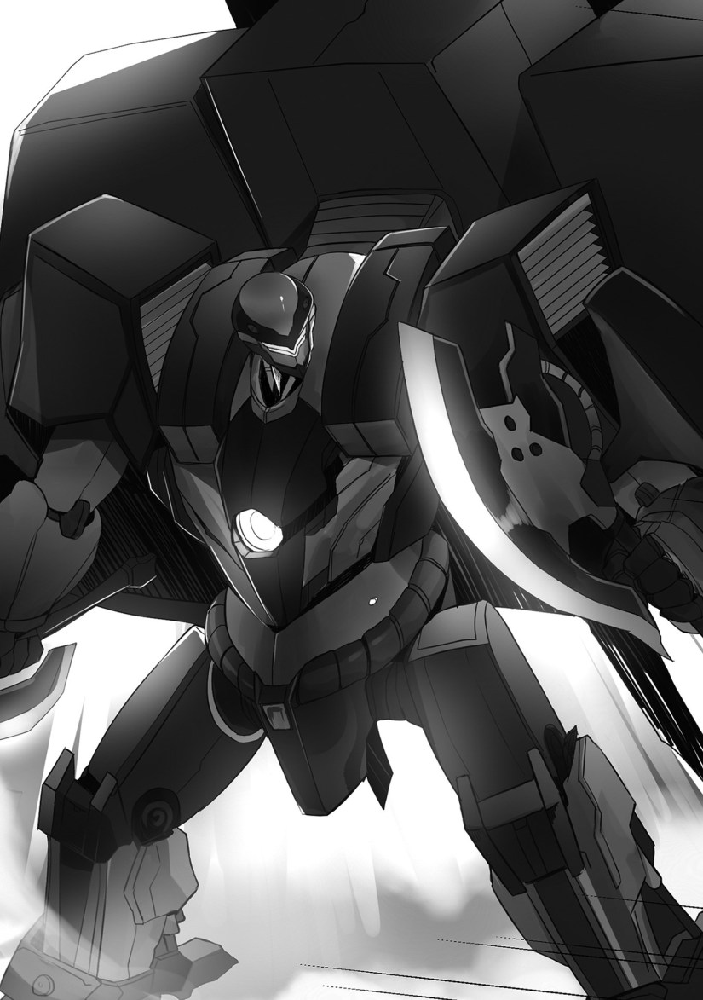

The royal palace.
Julian and Jilk were having a strategy meeting.
Julian was no longer the crown prince, so he didn’t expect many people to be around to hear.
Julian was glad that people no longer came to visit him almost everyday.
“I’ve been thinking about something, Jilk.”
“As expected of his Highness!”
Jilk praised Julian for simply thinking.
“How about secretly slipping out from the royal palace to help Greg and the others?”
“A good idea.”
“Ah, I thought so. However, how would we even sneak out?”
Jilk pondered.
“You do stand out in the royal palace after all, Julian. Milaine instructed some watchmen to keep an eye on you. Slipping out wouldn’t be a simple matter.”
“Is that so?”
When asked about how to sneak out, Jilk replied that it wouldn’t be easy.
“I’ve got it, Jilk!”
“As expected of his Highness!”
Julian spoke his thoughts to Jilk.
“A mask. Prepare a mask. I’ll hide my face──actually, it would do well to hide my body as well, so prepare a cloak too.”
“I see, you’ll escape by hiding your figure.”
“Right!”
“However your Highness, how do we plan on preparing a mask and cloak?”
Julian was troubled by Jilk’s question.
“That would be a problem.”
“It would.”
The two pondered for a brief moment.
“I got it!”
Thinking that Julian had an idea, Jilk praised him.
“As expected of his Highness!”
The two were so excited about sneaking out from the royal palace, they didn’t realize that they lost sight of their original goal.
Julian pondered.
(Right, if I’m going outside, then how about I see Marie? What a splendid idea I came up with.)
He began to think about going outside and meeting Marie.
Now that the two had been released from the pressure of their peers, they had a strangely high amount of energy.
In a sense, it was possible that the two were happy now.
“Let’s do it, Jilk!”
“Yes, your Highness!”
◇
Milaine was reading a report from a subordinate.
“I wonder what in the world those children are doing.”
Milaine was feeling dizzy from reading a report about how Julian and Jilk made a request for using the royal palace’s budget to prepare masks and cloaks.
The reason they gave seemed false, so she could only assume that they were scheming something.
Milaine seemed like she was about to weep.
“I wonder if those children are genuinely idiots. I thought they were superb prior to being disinherited, though. Were they seriously thinking about sneaking away from the royal palace using a method like this? If they were, then I’m really worried. Worried in so many ways.”
Milaine wanted to question the two about them trying to escape by buying masks and cloaks through the royal palace’s budget.
It was fine if they bought them, but she wondered if they had realized that she would know about their request.
“Leaving that aside, what did they plan on doing by leaving the royal palace? D, don’t tell me that they didn’t think about what to do after they would leave? T, there’s no way. Their stupidity can’t be that big. Though, I feel like they didn’t think about what to do after leaving the castle.”
Milaine thought about what the best course of action would be.
After all, Julian was her cute son.
She also had affection for Jilk as well, since she knew him when he was young.
“No, that can’t be it. Those two are honest and superb children. They must be confused, as they’ve never done anything like sneaking out before. Actually, perhaps they wanted me to notice? Or maybe this is something to throw me off guard? I’m not too sure about the possibility of it, though. However, since those two are excellent children, I’m sure that it’s something I don’t realize yet. What would a mother be if she didn’t have faith in her own son! This is definitely the groundwork for some grand plan they have.”
However──
“Even so, it’s a matter of fact that the two were indeed trying to escape from the royal palace, so perhaps I should summon them and give them a scolding.”
──Milaine soon summoned them.
◇
It was the next day.
It was the worst having the morning approach while not knowing what kind of response I should make.
There were two people at a table, Greg, who was greedily consuming the cuisine laid out, and Brad, who was eating elegantly.
“It’s only the morning, and you’re reeking of body odor.”
Since Livia was confining herself in her room, Luxon was delivering meals to her.
Greg wiped his mouth.
“I don’t want to see your face in the morning. Anyways, what do you plan on doing now? The main troops of the sky pirates are still out there, right?”
There were still sky pirates remaining, and now I was asked whether to subjugate them or leave them be.
Thinking in terms of the game, it was fine to leave the matter alone until the middle of the second school year.
However, the matter would become quite difficult by that point.
Besides, I wanted to destroy the sky pirates early.
The sky pirates belonging to Winged Shark were classified as very heinous ones.
I wanted to deal with them before the damage would spread.
I tended to strike while the iron was hot.
In addition, leaving it aside for later was troublesome. It seemed like it would be easy taking this opportunity to resolve everything.
“We’re pinpointing the location where they’re hiding. Just wait a little bit longer and we’ll embark, so──”
Thereupon, I got a report from Luxon.
[Master, it seems that the sky pirates are launching an attack.]
When I got up and looked outside the window, the other two watched me with nervous expressions.
“They mobilized surprisingly fast.”
As I was about to greet them, the other two got up.
Greg spoke to me.
“Baltfault, I can work with the broken armor. Please lend it to me.”
Brad also had a serious expression.
“I also found some armor that I could use yesterday. I want to borrow it.”
What did they plan on doing with broken armor?
“There’s no point. Could you guys really operate defective products? Both of you need to think more about──”
Greg bowed his head.
“I beg you! I know that I’m a burden to you. But, I can’t just sit still and watch.”
Brad also bowed his head.
“This is selfish of me. I know that. The broken armor belongs to you──and you alone. However, please lend it to us. We want to fight as well.”
I thought about refusing them, but I turned my face away when seeing the straightforward attitude and gaze they had.
“─I’ll give you one chance. Do as you please.”
“I’m indebted to you!”
“I’ll show you that I can be useful this time!”
Their voices cheered up.
They were about to go into battle, but seemed optimistic.
Luxon didn’t wait for my commands.
[Well then, I will begin the supplying and maintenance of the armor in good condition.]
──It said as such to me.
What a detestable thing this was. I was angry at how capable it was, yet how many complaints I had towards it.
I couldn’t scold it now.
“Count on me to prepare them.”
◇
It became boisterous outside.
Livia, who was sitting on the floor, got up and looked outside the window.
Her eyes were swollen from crying. She had a bad complexion and her feet were shaky.
“Why is Partner moving?”
Livia’s consciousness returned to her absentminded self as she felt the swaying of the ship.
Outside the window, Leon could be seen in the sky fighting while using Arroganz.
“Leon?”
Airships similar to the ones from yesterday’s sky pirates were approaching.
There were five of them.
They were especially large airships that looked to span three hundred meters.
As they floated side by side and their cannons opened fire, cannonballs successively swooped down onto Partner.
“Eek!”
Though she crouched down and covered her head, Partner was protected by a bright light, and it didn’t receive a single scratch.
“H, how amazing.”
As Livia watched the scene outside, Leon faced the enemy flagship and charged towards it.
The mast on the opponent’s airship was destroyed.
Livia was relieved when seeing that, and then fell down.
(I said something terrible to Leon. I need to apologize. I wonder why I even said such things.)
She regretted her actions.
She didn’t know why she said such things to Leon, who had helped her up until now.
Livia was hesitant and worried, but she then saw Leon blown off by an opponent’s armor.
“──Huh?”
Unlike other armor, the armor of this sky pirate was as large as Arroganz.
It was sharp, seemed strong, and was actually able to knock off Arroganz.
Seeing that, Livia’s chest tightened.
Perhaps from being tired and having her judgement dulled, Livia decided to go outside, despite not being able to do anything by herself.
She hurriedly jumped out of the room and ran across a passage to reach the deck.
The inside of the large Partner was spacious, so it also took quite the distance to reach outside.
On the way, there were floating robots that tried to prevent Livia from going.
“I’m sorry, let me through!”
──When Livia said so with a strong voice, the robots stopped moving for a moment.
After rebooting, they chased after her in a hurry, but in the end, they couldn’t catch up to Livia.
Even though she wasn’t standing on the deck, violent sounds of fighting, ones that she couldn’t hear inside the ship, pierced her ears.
There were the sounds of gunpowder explosions.
The sounds of magic colliding against each other.
At any rate, the battlefield was dominated by intense shaking, sounds of explosions, and gunpowder smoke.
Livia opened the airship’s door to search for Leon. It wasn’t a matter of being useful or not, she wanted to confirm Leon’s safety.
“Leon. ──Leon!”
Upon which, large armor fell down in front if her.
When she looked at it, it wasn’t the gray Arroganz, but a thorny armor with skulls and crossbones drawn onto it.
“──Huh?”
It was the armor that blew away Arroganz, the one she saw just before.
While shouldering a large hatchet-like weapon in its right hand, the armor reached towards Livia with its left hand.
It’s hand, large enough to engulf Livia’s head, approached. Robotic cylinders with arms intervened in order to protect Livia, who couldn’t move due to fear.
A muffled voice could be heard from inside the armor.
“Tsk, what kind of rubbish is this?”
It was the throaty voice of a man.
The armor shoved away the robots with its fists and once again reached out towards Livia with its hand.
Livia closed her eyes and hung her head.
(No──Leon, help.)
“You think I’ll let youuu?!”
The one who helped Livia──wasn’t Leon.
Brad, using armor taken from the sky pirates, had rammed into the enemy.
However, the opponent braced himself and was only pushed back slightly on the deck.
With Brad’s armor, it looked like a child trying to push away an adult. There was just that big of a difference in size.
While Livia, so surprised by the series of events that happened before her, forgot to breathe, the sky pirate grabbed Brad and flung him away.
“Don’t get cocky, brat!”
Brad’s armor rolled on the deck.
As soon as he got up and tried to face his opponent, this time Greg and his armor crashed in. Wielding a spear, he had charged and destroyed other sky pirates’ armor.
“Aah, out of the waaay!”
Though Greg’s spear attempted to pierce into the sky pirate, it couldn’t get through the bulky armor.
“How tough.”
The sky pirate pulled out the spear lodged into the armor and then thrust it into the deck. He then thrust it at Greg’s armor as well.
Brad stood up to protect Livia, who was unable to move from the terror portrayed in the battle before her.
“What are you doing?! Get down!”
“M, my legs won’t move.”
Livia was immobilized from the fear brought by armor fighting against each other.
◇
I was above the sky.
I got blown off and struck a nearby sky pirate in anger.
“You’re in the way!”
I grabbed the sky pirate’s armor and threw it towards the sky pirates’ airships.
Surrounding me were the floating armor of sky pirates.
My breathing was shaky.
Inside the narrow armor, I shouted an order to Luxon.
“Don’t kill them. Seize everyone!”
Luxon complained about my order.
[I’d say that’s unreasonable. Something like that is difficult to say the least.]
When I deployed drones successively from a container on Arroganz’s back, they surrounded me as if to protect me.
The sky pirates, who had rifles, were shouting. “Monster!”, “Wh, wh, who is this guy?!”, “He repelled all of our bullets──no waaay!”. While ignoring their conversations, I recalled what happened a short while ago.
The sky pirates’ leader.
A man who used large armor and had a bounty on his head.
Generally, armor was slim. The sky pirates had similarly slim armor as well, and rushed towards me at a high speeds.
However, the leader of these ruffians used massive armor that was as large as Arroganz.
“I want to capture that guy as soon as possible.”
Luxon warned me as I was getting impatient.
[Master, your reaction time is slower compared to before. Your maneuvering skills and other abilities have gotten worse.]
──That would be the case. I’ve lacked in practice.
“My bad. I was busy.”
[No, this is a problem relating to your mental state.]
The grey, heavy armor Arroganz soared through the sky.
The armor repelled the bullets being shot by the sky pirates. My armor was certainly the strongest, being able to overwhelm the sky pirates in both speed and power.
I was using such strong armor, and yet I was struggling.
I had underestimated my opponents.
The leader of the ruffians left me to his subordinates and avoided fighting me.
The sky pirates were also only surrounding me and attacking with just their rifles.
It was very troublesome when the enemies were running around.
I approached, grabbed an opponent, and crushed the head of its armor. From the crevices of the armor, I could see the frightened face of the piloting sky pirate.
“How long do you plan on keeping this up? Let’s end this at once!”
[Master, the leader of the sky pirates has landed on Partner’s deck. Furthermore, Olivia is on that deck.]
“Wha?!”
As I was surprised, a sky pirate airship turned towards me and fired cannonballs one after the other.
They collided against Arroganz and caused explosions.
I criticized Luxon from within the armor.
“Why did you let her out?!”
[My apologies. The worker robots were temporarily down. It seems something had caused──”
“Enough! We need to help right now!”
On a projection in front of me was the image of Brad and Greg challenging the sky pirates’ leader.
They were resolutely going against him with their armor that once belonged to the sky pirates, which had been repaired for the both of them.
[It seems it was the right call to have them participate. Right now, they’re fighting to defend Olivia.]
That image──Livia being protected by both of them──looked as if it were natural, and left a strong impression on me.
It was an image I saw many times in the game, a scene where the capture target boys were defending the protagonist.
I hung my head and laughed.
“──Right. Isn’t this how it’s supposed to be? The capture targets and the protagonist go hand-in-hand! A mob like me being by her side is a mismatch!”
[Master?]
“──Right. Didn’t I already know this all along? I shouldn’t get surprised about it at this point.”
I took a deep breath, tightly grasped the control sticks in front of me, and turned off the projection in front of me.
I didn’t need to harbor any pointless thoughts. All I needed to do was to end the matter that was right in front of me.
Right, I have my own place.
──After all, aren’t I just a mob?
Wasn’t it presumptuous of me to think that I could stand beside the protagonist──Livia?
That wasn’t my role.
“Increase output. Once you’ve done that, let’s use those from the third container.”
[──Understood.]
Perhaps sensing that my aura had changed, Luxon didn’t say much. What was the matter? Say something. It got quite lonely not hearing it bicker.
Arroganz grasped two hatchets from the container, one for each hand.
As each hand tightly grasped the large hatchets, I slowly raised my head back up.

“──Let’s crush them.”
◇
Nice thanks for the chapter
Thanks for the chapter!!!
And here I thought that Leon will stop seeing Livia as a protagonist…
Thanks, great chapter
Thanks
I pity the pirates. Seriously.
Thanks for the chapter!
Thanks!!!
I’m kind of getting annoyed how Leon constantly thinking everything of the world is a game even though it’s real life to him now as well as sees himself as a mob. ????
Psst… He never kill anyone, not yet though. He need to feel the blood and taste a despair first. And on another note, the 5 rangers presumably didn’t have problems about killing people.
I think what he need the most right now is a slap on the face, so he can realize how dumb his train of thoughts are. It’s all happened because no one ever scold Leon.
He has been scolded just doesn’t agree with reasoning behind scolding. Like when his father scolded him for rubbing Zola’s face into all the treasure he brought back from his new island and that she couldn’t touch it because he was investing it into the barony. Not wanting to kill people isn’t a bad thing. If he killed all the air pirates with Luxon the palace and others would consider him more of a direct threat than an upstart noble. Check history. Most of the nations that were into killing all their enemies no matter what didn’t last long before falling. Once the war starts, whether in the third year like the game or sooner, he’ll probably have to kill someone and learn to live with it. Hopefully Angie and Livia will be there to help him cope with it as killing a fellow human being should never be taken lightly.
As for the baka rangers they don’t have issues with killing someone. Not sure if they have killed yet but Purple tried to kill Leon before the duel officially started and Green set off a bomb set on Arroganz with a yield that would have killed anyone in conventional armor.
Axe and you shall receive. While the main character thinks about his interpersonal hang ups let’s axe murder a bunch of pirates.
Thanks for the chapter~~~
Its been so long…. damn i has responsibility in my hand, still trying to catch up with your latest chapter.
Leon still needs to get his head out of his butt and Livia as a person. It seems like he’s committing to killing these Pirates if that’s what it takes for everyone to come out alive which is progress, I suppose. Thank you for the chapter!
Thanks for the chapter
I pity Milaine more now, in no time she will also yearn existence like Leon. And we need Angelica to diffuse these situations before develop to ” I’m not good enough for him/her drama “.
Meatbun Delivery~
Thank you for the chapter ( ●w●)
Aww.. mob boss got heart broken..
Thank for the chapter.
Brad and Greg are useful. Well the Prince and Jilk fail at doing anything useful. Poor Milaine she still want to believe there not idiots.
Bigger question is who is going to lead to Leon helping in the war that coming early?
With how he only thinking about him being just a mob, it would just made him even more unwilling to do anything when the war happen. When it clear that without him the Kingdom will lose the war.
Specially with this chapter making him think even more how he not good enough to be by Olivia side because she the special being call the protagonist in his mind.
The bigger question is went will Olivia pick herself up and start acting like a protagonist would?
After seeing this fight and being useless, hopefully this will help her in her character growth.
I’m really getting sick of Leone’s attitude. If he doesn’t stop being so dense soon, I’m going to drop this novel.
then drop it, because Leon will still act like piece of shit like this until the next arc
Truck-san!! Pks hit this guy for giving spoiler!!
Density is a mighty fine defense against women.
What you don’t (or at least pretend to not) notice can’t hurt you right?
Thanks for the chapter… I wonder who will get choosen by leon? Olivia or angelica…
…
…
It has to be millaine…
No no no, the one leon loves the best is his master
I think it will be both
Thanks for the chapter.
Can we all agree hat Leon’s an idiot right now?
I just noticed… He has a Heat hawk from Gundam… MEANING THERE MUST ALSO BE ZAKU’S AND GUNDAMS!!!!
But really Leon follow your heart, follow your feelings, SHOW YOUR TRUE WORTH AS A MAN!!
Thx for the Chapter~!!
(´｡• ω •｡`)
I know that capture target are supposed to be dumb (how else would they fall for the capture 5 important people scheme) but I thought that at least had common intelligence, did they become dumber after Leon changed the plot or they always were that stupid?
Thanks for the chap
And Leon still see people as people in the game, not as a real person. Dude, just face the truth. You’re not in game, you’ll die if you die. -Emiya Shirou
Thx for the chapter “León help!” i just had resident evil 4 flashbacks. Love this novel. Many are trashtalking León but for me this is character devlopment
Thanks for the Chap!
About Leon character development, I know many people are trash talking him but c’mon, you can’t expect him to be the normal MC with the good guy qualities. But remember, Leon is a guy who died from the “real” world and was reborn to the otome game world. He’s pretty much like us, for example if Leon was real, like some of us now, he would probably trash the MC of this novel too.
He calls himself a mob simply because he believes that he himself has nothing going for him other than having power, in other words luxon.
If he loses luxon, he would have nothing left going for him. Even his confidence comes from having luxon.
Sure he’s a baron, but the reason why he has that tittle is because he trashed the 5 dudes with luxon in the first place.
I think his character development now is not to grow up, but simply wake up.
What Leon needs right now is to wake up and starts thinking that the “otome” world is now his “real” and start taking things a bit serious, which will probably happen by the end of this volume.
Well that’s how I see it, and I don’t really expect people to agree with me or dis agree with me. I just wanted to point out how I feel about leon at the moment.
Thanks for the chapter! I think Leon’s dark mode switch got flipped…. I also think the girls need to sit Leon down for a very pointed chat. I think Leon’s problem isn’t so much that he thinks this is a game and the people are all game characters, but that he thinks he and everyone else are stuck following the game storylines or settings. Since he arrived, his belief that he’s only a mob who can only work within the constraints of the game plot have controlled his actions. The only times he’s tried to control the plot himself is when he’s desperate to change things to help himself or someone else. The fact he can also be a protagonist and change the plot has yet to dawn on him. That’s why he’s especially dense, and has trouble adapting to when there are major plot shifts involving himself. If the girls would smack him in the face with the fact they really care about him, it might wake him up. Maybe. Plus, I think the prince and company were always borderline idiots, and that’s why they performed so badly in the game and in “real life”.
So before anyone starts to drop the novel due to Leon’s current attitude, let me clarify some things.
Regarding his relationship with Livia, while he constantly talks about him being just a mob and Livia being the protagonist as reasons why he doesn’t get too close to her, these are just excuses to himself because he thinks of himself and not being worthy enough for her. Leon lacks a lot of confidence in himself and thinks he isn’t good enough to make Livia happy, the reason for which he thinks it’s better for her to be with the male leads of the game since she was supposed to end with a happy life with them.
So basically, he just assumed the worst from what Livia said, thinking that he shouldn’t get involved with her since he isn’t someone who will be able to make her happy (at least that is what he thinks so).
Good lord, Leon is gonna bust some skulls in for his wife.
Let’s wait for the next chappu~
Ach, come on. Don’t be to hard on Leon and the author on this matter.
Leon reincarnated in an unreasonable setting to begin with. Sure it is now his reality and this isn’t a game anymore, but it still has many elements of that game. His role in the game setting was a bg mob, if even that. He should have been sold off at this point. What gave him the edge here was his knowledge of this otome game title. And his strategy, to 1. look at it as if it is a game, 2. abuse certain knowledge and 3. don’t get involved with the main plot, worked fine for him on all major points. E.g. he wasn’t marriage off, got hold of a fortune and made it to the best All-you-can-marry buffet. (That mega mixer school didn’t work out in his favor though.)
But when he got himself involved, that was the point where things got really messy. The point, where he endangered his new family. Of course he always believed, that this was a HUGH tactical mistake not only him, but his beloved one will pay (, because “he didn’t put up with society, like an adult”), up until now. And now when Olivia, who ISN’T just the protagonist in his eyes, got at him and he realized he hindered her growth, he draw the WRONG conclusion, he should have stick to his plan. What the heck was he doing? He didn’t train anymore, underestimated the pirates, moved his beloved ones into the sight of bad people and maneuvered himself into a position, in which he has to kill other people (no matter how much he tries to see them as NPCs).
Leon’s state of mind doesn’t feel off and the author did a brilliant job of inserting this psycho drama, instead of something else, that is not as classy.
He couldn’t stick to the plan anymore anyways, because the events started to unfold messy, when his sister, that fool, messed with it. (Does someone else beside me believe, that the focus might shift away from Leon for a while and that the story might focus on Marie as protagonist instead?)
Understood. Curbstomp begin. Second release. Success. Enhancing body armor. Success. Enhancing weapon. Success. Proceeding to unlock next mode: Massacre. Success.
thanks for the chapter! ????
from the past i know Julian is stupid but now i think i know what level Jillian stupidity, he brain works like kids 5 year old..
Oya oya… look like Leon feeling jelous, i hope pirates not dead with Arroganz large hatchets hehe!
Thanks for the chapter
Thx for the chapter
Thanks for the chapter desu~!
This Otome game novel would be perfect if only Leon inherited some of Harrold’s(Death Flag) mindset and qualities.
Thank for the chapter
Im just a poor mob soloing Sky Pirates. Right. Just a mob don’t mind me.
Thanks for the chapitre
Thanks for the chap!
Yup, getting really sick of his attitude. Mob this, Mob that. He should know the moment he fuckin pick Luxon and involved himself with Livia, he aint gonna be mobs anymore. Thought he was kind of clever but he really just an idiot.
Thanks for the chapter!
At least after this fight he get to know his place and get practicing while maintaining it. That scenario will also be perfect when he does his own things while not going after the game characters. But the variables such as the girls would also make that uncertain.
Thank you again for another chapter! 😀